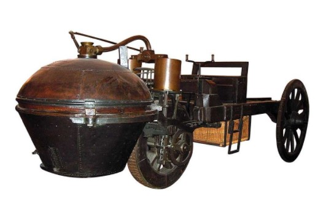
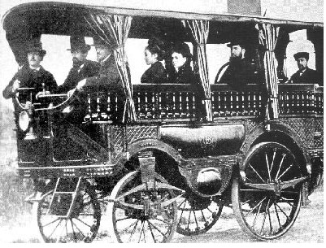
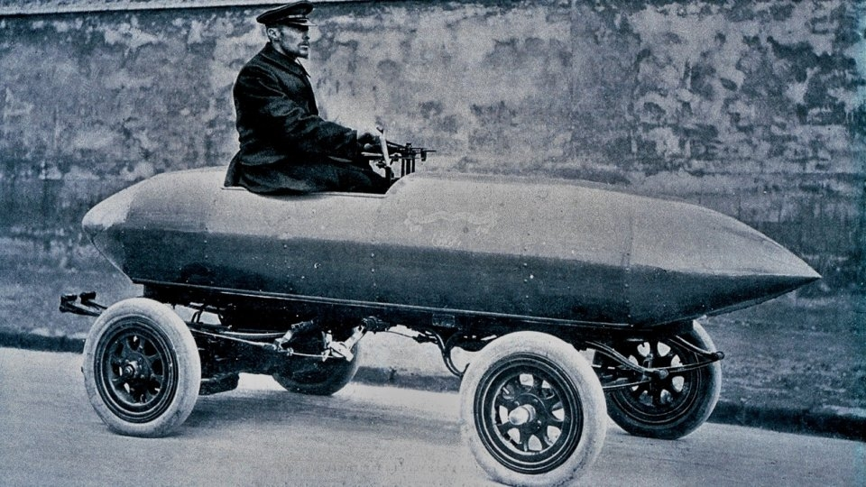

Le premier véhicule automobile fonctionnel a été inventé en 1769 par Joseph Cugnot sous le nom de fardier de Cugnot mais il faut attendre la deuxième moitié du xixe siècle et les progrès liés à la révolution industrielle pour que les véhicules automobiles personnels se développent et prennent finalement leur nom actuel d’automobile. La naissance de l’automobile s’est faite par l’adaptation d’une machine à vapeur sur un châssis autonome mais des problèmes techniques et sociaux ont retardé son développement. L’encombrement de la chaudière, les matériaux inadaptés aux hautes pressions et les châssis supportant mal les vibrations furent les principaux obstacles techniques et la dangerosité perçue et réelle de ces engins sur les routes à l’époque a conduit à des législations contraignantes, comme le Locomotive Act au Royaume-Uni.
L’aventure automobile a commencé en France, où les premières expériences réussies ont eu lieu en 1873. Un tel succès qu’en 1895 environ 350 automobiles circulaient déjà sur le territoire français, contre 75 en Allemagne et seulement 80 aux Etats-Unis. C’était une époque où on ne parlait pas vraiment de fabricants de voitures, mais plutôt de carrossiers. En France, ils ont su tourner la page de la somptuosité décorative, qui avait fait leur réputation au xviiie siècle, et ont appris à jouer avec les nouveaux codes esthétiques.
 Les premières automobiles produites et commercialisées sont à vapeur (L’Obéissante d’Amédée Bollée en 1873) et les premiers prototypes utilisant les nouveaux moteurs à explosion moins encombrants sont réalisés vers 1885. Dans le même temps, le développement des connaissances liées à l’électricité mène à la réalisation des premières voitures électriques : on a donc trois modes de propulsion en concurrence au tournant du xxe siècle. La vapeur est rapidement supplantée et le développement rapide des performances des voitures électriques est stoppé par l’absence de progrès notable dans le stockage de l’énergie, c’est donc le moteur à explosion qui l’emporte sur les autres modes de propulsion. Cette époque est celle de la course à la vitesse, et c’est d’abord la voiture électrique qui s’y illustre (La Jamais Contente est la première à franchir la barre des 100 km/h, en 18997) avant d’être supplantée par la voiture à moteur à explosion. C’est aussi la période de naissance des premières courses automobiles, telle Paris-Rouen en 1894. L’automobile reste alors un produit de luxe, à l’usage contraignant, utilisé sur des infrastructures totalement inadaptées.
L’histoire de la voiture a fait naître et vivre différents métiers. À ce moment de l’histoire, construire une voiture était une affaire collective dans laquelle carrossiers, mais aussi charrons, serruriers, malletier, selliers-garnisseurs, bourreliers, plaqueurs et peintres étaient impliqués ensemble. Tout était fait sur mesure, des carrosseries qui s’adaptaient aux châssis, en passant par les sièges ou les bagages arrimés à l’arrière pour les premiers voyages.